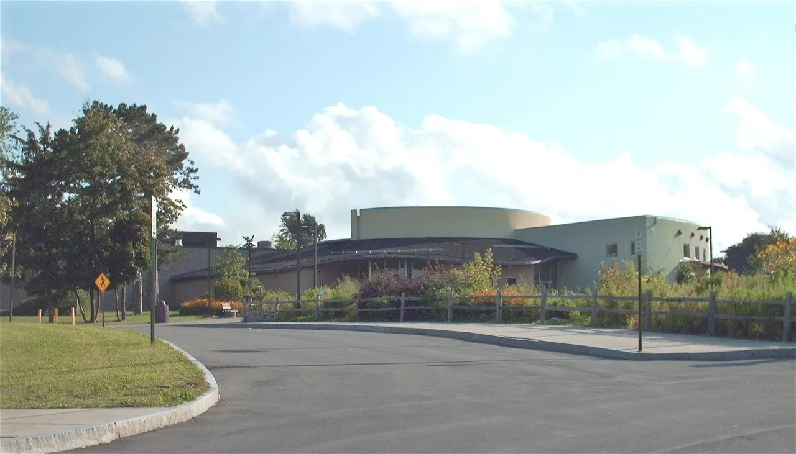
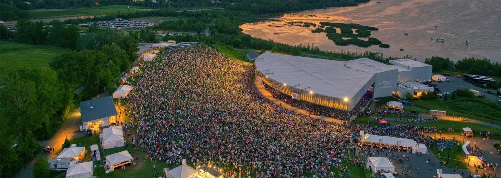

Journal
Local stories & travel notes from Central New York.
Local guides, dining tips, and travel notes from our front-desk team. We live here — these are the places we'd send a friend.

Local Guide · Dining
Where locals actually eat in Liverpool, NY (beyond the chains)
A deeper dive into the best restaurants in and around Liverpool — Heid's, Brooklyn Pickle, Dinosaur Bar-B-Que, Phoebe's, Alto Cinco, and more. The places our front-desk team actually recommends.

Local Guide · Family
A kid-friendly Syracuse weekend: Destiny USA, the zoo, and a hotel pool
The full family-weekend itinerary from our front-desk team — Destiny USA, WonderWorks, the Rosamond Gifford Zoo, Onondaga Lake Park, and why Liverpool beats downtown for families with kids.
Local Guide · Onondaga Lake
A local's guide to Onondaga Lake Park (trails, Salt Museum, and Heid's)
Eight miles of free paved trail, a 100-year-old salt history museum, the Wegmans Boundless Playground, a free carousel, and the iconic Heid's hot dog stand — all 4 minutes from the hotel.

Local Guide · JMA Dome
JMA Wireless Dome event guide: hotels, parking, and game-day tips
Football Saturdays, basketball nights, lacrosse spring, stadium concerts — our complete guide to attending events at the JMA Wireless Dome, including where to park, eat, and stay.

Local Guide · Concerts
2026 Empower FCU Amphitheater concert guide: hotels, parking, logistics
Everything you need for a lakefront concert night — getting there, where to park, pre-show food in Liverpool, and why staying close beats driving home after the encore.

Business Travel · Micron / Clay
A contractor's guide to staying near the Micron Clay site
Working on the Micron megafab in Clay, NY? Liverpool is the smart base — 10 minutes to the site, away from the construction convergence, with direct billing, free parking, and a real breakfast.

Local Guide · NYS Fair
The NYS Fair survival guide: hotels, parking, and food (2026)
Nearly one million visitors, 13 days, and every parking trick our front-desk team knows. The complete guide to the Great New York State Fair — as an Official NYS Fair Hotel Partner, 7 miles from the gates.
Local Guide · SU Game Day
SU game day weekend in Syracuse: where to stay, park, and eat
The complete game-day guide from our front-desk team — getting to the JMA Wireless Dome, campus parking, pre-game restaurants, and the SU weekends that book out months in advance.

Local Guide · Destiny USA
12 things to do near Destiny USA
Planning a trip to Destiny USA? Our concierge's local guide to the best shopping, dining, entertainment, and outdoor stops within minutes of the mall and Syracuse Grand hotel.
Local Guide · Dining
Where to eat in Liverpool, NY
A Syracuse Grand staff guide to the best restaurants in Liverpool, NY — from classic diners to wood-fired pizza, family Italian, and lakeside dining. All within minutes of the hotel.

Travel Tips · Syracuse Airport
Your guide to airport hotels near SYR
Flying in or out of Syracuse Hancock International Airport (SYR)? This guide explains your options, what to look for, and why the Syracuse Grand is a smart pick — 4 miles, 8 minutes from the terminal.